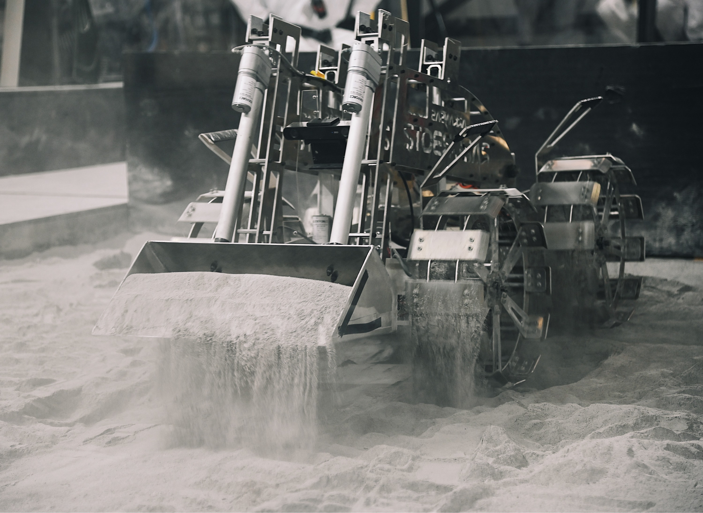

Handheld Diagnostics Tool
A handheld diagnostics tool that allows users to directly control the robot and run diagnostics without a network connection.
Overview
This project was developed for the Arkansas Razorbotz robot, which competes in the NASA Lunabotics competition. The goal of the competition was to create a robot that can build berms in a simulated lunar environment. To help add to the more realistic conditions, the pilots of the robots are placed in a mission control area that is isolated from the competition arena. The team members that carry the robot into the arena must perform any last minute inspections and tasks that are needed during the five minute setup phase, before they must leave the arena. However, the computers onboard the robot take an average of 1.5 minutes to boot up and connect to the network, which leaves very little time to successfully identify and rectify any issues with the robot. This was especially apparent last year when one of the linear actuators on our bucket failed and we were unable to identify the issue before the competition run.
To solve this time issue and to allow users to control the robot without needing to boot the computer, I created a handheld diagnostics tool. This device uses an ESP32-S3 Touch, which has a CAN transceiver built into it, to communicate with the motor controllers. The tool is able to control the three systems on the robot, drive train, excavation arm, and excavation bucket, as well as read all of the telemetry data being transmitted by the motor controllers. I built the interface using the lvgl library, which is the Light and Versatile Graphics Library, as well as C to create the functionality.
Before this project, I had never used any CAD software to design anything. To create the outer housing for the tool, I learned how to use Fusion360 and designed around a model of the ESP32 and the 18650 battery I used to power the device. The tolerances were nearly perfect, with the ESP sliding and locking into place.
Technologies Used
- Frontend: lvgl
- Backend: C
- Controller: Waveshare ESP32-S3 Touch
Key Features
- Control robot using CAN interface
- Runs diagnostics to identify motor issues
- Real-time data parsing and display
- Graphs motor data
- Designed and printed outer housing
Challenges & Solutions
One of the main challenges of this project was creating the CAN messages that were needed to control the motor controllers. We use the TalonSRX and TalonFX motor controllers for our motors, which are made by Cross The Road Electronics. CTRE maintained a few old GitHubs that contained very old firmware that served as a good starting point for reverse engineering their CAN messages, but they refused to provide any additional information about their API due to IP theft concerns. To solve this, I sent known speed values to the motors and capture the messages using the candump utility on Linux. I was able to reverse engineer the output to get the motors running at the correct speeds, as well as parsing the returning data to decode the information contained.
Outcome
The Handheld Diagnostics Tool was successfully able to control the robot and run local diagnostics on the robot to identify motor issues. This cut the time needed to begin diagnosing motor issues from a minimum of 100 seconds to below 1 second. The controls were intiuitve enough fo children to use them easily and the ground crew members all had high praise for the ease of use and utility of the tool.